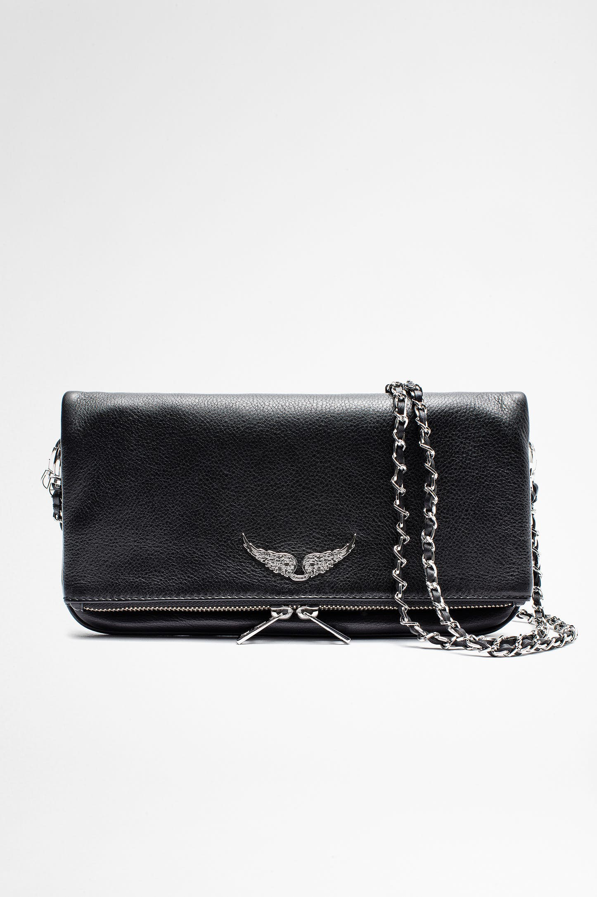

Zadig & Voltaire
En créant Zadig&Voltaire, Thierry Gillier a imaginé un nouveau luxe. Il l’a affranchi de sa définition académique, et l’a enrichi d’un caractère authentique et chaleureux. Ce cheminement intellectuel a façonné un luxe modernisé qui se manifeste par un style effortless, chic et nonchalant. Ce luxe est devenu un état d’esprit, une nouvelle façon de regarder le monde qui privilégie le naturel à l’artifice, dans une quête de sens pour parvenir à soi.
Inscrivez vous à l'avant première de la collection Été 2022
Nos best-sellers
Sac Sunny Medium
Sac Sunny Nano Studs

Pochette Rock